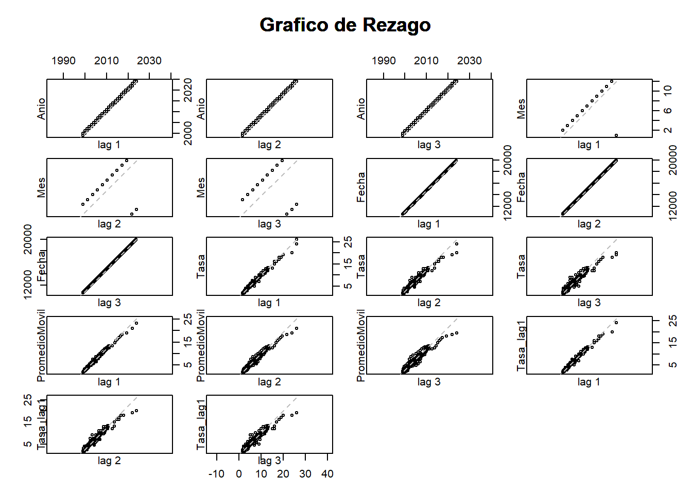

Capítulo: 4 Análisis de serie de tiempo:
4.1 Promedio o media móvil
Permite analizar el mercado a través de las tendencias. La media móvil es una técnica estadística que se utiliza para analizar datos a lo largo del tiempo. Permite calcular la media de un conjunto de valores en un intervalo específico y luego desplazar ese intervalo a lo largo de la serie de datos para obtener una nueva serie de medias; lo que permite suavizar fluctuaciones en los datos así como resaltar tendencias.
Se conoce como media móvil ya que el valor se calcula constantemente a medida que pasa el tiempo; de esta forma, la media cambia cada vez que los valores presentan alguna modificación.

4.2 Rezago (operador backshift) y estacionalidad
El rezago es una herramienta estadística para el análisis de series temporales, que permite observar el valor de una variable en un momento anterior, facilitando la identificación de patrones y tendencias a lo largo del tiempo.
En cuanto a la estacionalidad, hace referencia a las variaciones periódicas y predecibles en los datos que ocurren en intervalos regulares.
Con la incorporación de ambas herramientas es posible modelar y prever comportamientos futuros de las series temporales.
## # A tibble: 6 × 6
## Anio Mes Fecha Tasa PromedioMovil Tasa_lag1
## <dbl> <ord> <date> <dbl> <dbl> <dbl>
## 1 2024 oct 2024-10-01 10.2 NA NA
## 2 2024 sept 2024-09-01 10.8 NA 10.2
## 3 2024 ago 2024-08-01 10.8 10.6 10.8
## 4 2024 jul 2024-07-01 11.8 11.1 10.8
## 5 2024 jun 2024-06-01 11.8 11.4 11.8
## 6 2024 may 2024-05-01 12.2 11.9 11.8
La gráfica visualiza la correlación entre una variable y sus valores rezagados (delayed values). Este gráfico es útil para detectar patrones en series temporales y evaluar la autocorrelación en los datos.
- 1. Año vs Rezagos (lag 1, 2, 3)
Las gráficas entre Año y sus diferentes rezagos muestran una relación lineal perfecta, lo que era de esperarse, ya que el valor de un año en un rezago anterior está directamente relacionado con los años consecutivos. Esto sugiere que el “Año” no aporta una variabilidad significativa en términos de cambios bruscos, es decir, la serie avanza sin saltos.
- 2. Mes vs Rezagos (lag 1, 2, 3)
Las gráficas entre Mes y sus rezagos muestran una estructura cíclica, con puntos que siguen un patrón predecible. Esto tiene sentido, ya que los meses siguen un ciclo repetitivo de 12 unidades (de enero a diciembre).
los meses correlacionan bien con sus rezagos inmediatos, pero a medida que aumenta el número de rezagos (lag 2, lag 3), el ciclo es más visible, lo que indica que la periodicidad estacional en los datos está bien representada.